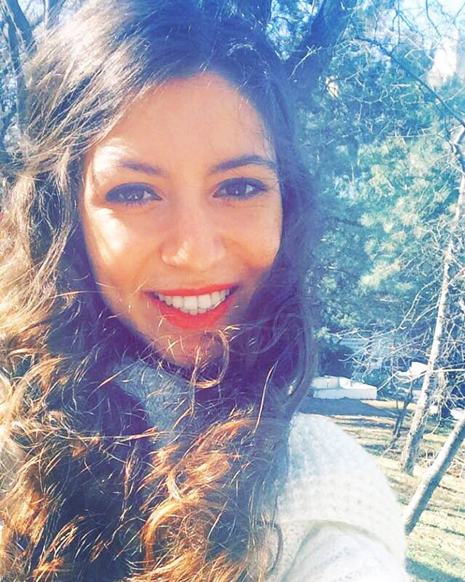

Fatma Rümeysa Göllü
rumeysagollu@gmail.com
Hakkında
-
Deneyim
-
Kurs Sertifika
-
Eğitim
-
Hobiler
-
Daha fazla bilgi...
Hakkında
1995 yılında Kayseri'de doğdum. İlköğretim ve ortaöğretimimi Kayseri'de tamamladım. Üniversite eğitimime Hacettepe Üniversitesi Bilgi ve Belge Yönetimi Bölümü 'nde devam etmekteyim. 2014-2015 Mamak Belediyesi'nde Osmanlıca Türkçesi eğitimi aldım. Hacettepe Üniversitesi'nde seçmeli ders olarak keman eğitimi aldım. Üniversite ve Araştırma Kütüphaneleri Derneği' nin alt yapı grubu olan Genç ÜNAK 'ta aktif olarak yer aldım.
Deneyim
Kurs Sertifika
-
2015 "Elektronik Çağda İcerikten Mimariye Kütüphaneler" Sempozyumu
ÜNAK2015
-
Osmanlıca Türkçesi Sertifikası
TC. Milli Eğitim Bakanlığı
2014-2015
Eğitim
-
Bilgi ve Belge Yönetimi, Hacettepe Üniversitesi, Ankara
(2013-)
-
Mustafa Eraslan Lisesi, Kayseri
(2011-2013)
-
50. Yıl Dedeman İlkööğretim Okulu, Kayseri
(2001-2009)
Hobiler
Başa Dön...
Fatma Rümeysa Göllü'nün Özgeçmişi. Son Güncelleme 23.02.2016